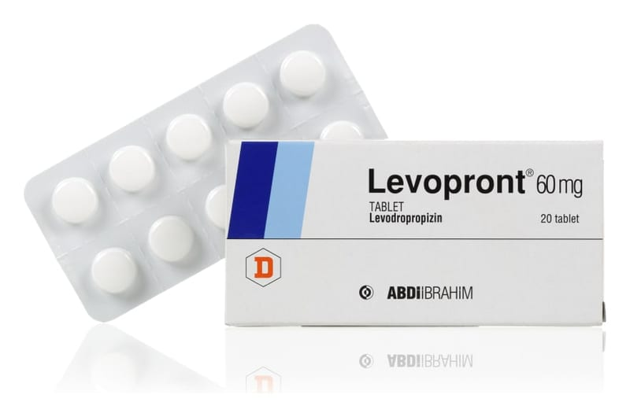

Levopront 60 mg Tablet, 20 Adet

Ne için kullanılır
KT · Bölüm 1LEVOPRONT, etkin madde olarak 60 mg levodropropizin içerir.
LEVOPRONT, 10 ve 20 tablet içeren blister ambalajlarda sunulmaktadır.
LEVOPRONT, “öksürük baskılayıcı ilaçlar” olarak adlandırılan bir ilaç grubuna dahildir.
LEVOPRONT çeşitli nedenlere bağlı kuru öksürüğün giderilmesinde kullanılır.
LEVOPRONT beyaz renkte, yuvarlak, bikonveks, tek tarafı çentikli tablettir.